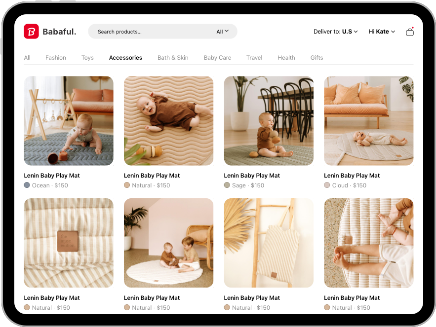

Don’t Guess, Test
Product Testing
As the only designer in Babaful, I’m in charge of website and client panel design. Here I deatil how I tested
diffrent grid layouts in order to give great user shopping experience. In this case study I chose to showcase
my method of product testing, testing website elements might be one of the easier testing subjects but the
method is the same. My testing method usually follows a simple scientific based approach, it goes as follows.
Introduction
1. Hypothesis
2. Control Design
3. Design Variants
4. Designing The Test
5. Test Indicators
6. Ideal Users
7. The Experiment
8. Data Analysis
9. Report
2. Control Design
3. Design Variants
4. Designing The Test
5. Test Indicators
6. Ideal Users
7. The Experiment
8. Data Analysis
9. Report
Download Case PDF

Before I form my hypothesis, I wanted to get a clear understanding of the product. Even in a simple element
like a product grid, the goals could vary. If the goal is conversion rates, there is a good grid layout for
that, if the goals is to get clicks, a different layout may apply. Having interviews with the stakeholders is
my favourite way to do so, I need them to explain me their thinking and the vision of the project. I want to
conduct tests that will be valid years down the road, so understnading the product is a must.
Hypothesis
The stakeholders gave me a clear abjective for the grid, conversion. Babaful is a small shopping platform and
focusing on conversion is key. I chose this hypothesis.
I wanted to check if different grid designs will increase sales, will a simple thing like a grid design help
users get a better shopping experience?
Can I increase conversion rates with different grid desgin?
The Babaful website prototype interface with the control grid design.
Variant 1 · Pinterest grid layout, visually pleasing but lack info.
Variant 2 · Magazine grid layout, very good on info but lack flow and not visually pleasing.
When testing elements, I like to have a few options to test, I usually take one exmaple from an already
established product as a control subject, after that, I come up with a couple more variants of the same
element, there is no limit I go by when it comes to testing variants, its just a matter of time and resources.
I think that testing a few variants gives a very good understanding of the stong and weak points of each
variant, more than that, it give a great body of data to work from in the future.
Control Design
As a control subject, I took this grid from Amazon, just a simple four square grid that perform successfully
for many other companies. I wanted to make sure, the control is easy to understand, not complex and the
testing team can start from a simple place and then I will add complexity. I feel that starting with a simple
design helps the user to get a grasp of the task at hand and get a feel for how complex the test is going to
be.
Control Design: Box Grid Layout (Amazon, eBay etc…)
I want to emphasis my thinking behind chossing those specific desing variants.
Testing is a science, not an art. I didn’t come up with those variants from thin air, for the eagle eye readers, Variant 1, is the grid from Pinterest. Pinterest is moving towards a more ecommerece type business model and the grid layout they use is a trade mark of the platform, more than that, the people who will use Babaful are very familliar with Pinterest thus making a simillar variant a smart choice.
Testing is a science, not an art. I didn’t come up with those variants from thin air, for the eagle eye readers, Variant 1, is the grid from Pinterest. Pinterest is moving towards a more ecommerece type business model and the grid layout they use is a trade mark of the platform, more than that, the people who will use Babaful are very familliar with Pinterest thus making a simillar variant a smart choice.
Design Variants
Variant 1: Flow Grid Layout (Pinterest)
Variant 2: Info Block Grid Layout (Old Magazines)
Variant 2: Info Block Grid Layout (Old Magazines)
The second veriant is an old grid layout from old magazins back in 90’s, I wanted to see how that desing hold up
against more modern desings. My reasoning was that the ideal users of Babaful, which are new moms, have played
around with their parents old magazines as kids, thus making the variant much more effective towords Babaful’s
ideal users.
At this point, I was in a bit of a pickle, since I only had 4 days of testing, I wanted to use something will
give me the clearest data and will give the user the best experience, I think this is a very important issue
with testing, the better the testing product, the better the results. So what I did, is I took a 1 hour design
sprint and came up with a working MVP. All I did is go on Sketch, design the pront page with the
testing grid and a simple option to click the products, purchase now and thats it, I then exported everything
into HTML and publish it on Netlify.
For the actual experiment, I wanted to make sure I can hit all the points and indicators I wanted. Since I
haven’t came up with indicators yet, I wanted to design an experiment that will allow the users to feel like
they are not in a test thus making the data much more honest. I figured I will get around 10 ideal users for
testing but interviewing them is not enough, so I chose to just let them use the MVP I built, capture the
screen and their eye movement and try to get the most honest data I can.
Designing The Test
MVP: Letting users test the MVP while capturing screen and eye movment.
Interviews: Follow-up interviews with users.
Interviews: Follow-up interviews with users.
For the testing indicators, I wanted to go with something I can check again and again, indicators that
reflects website conversion and industry standard metrics.
The followings are the indicators I chose.
The followings are the indicators I chose.
I feel that these indicators are a great way to messure “Shopper Mentality” which can increase adoption rate
and revenue.
Test Indicators
User Inclination: Does a user’s first action conducive to shopping?
User Choices: How a user respond to different kind of products.
User Flow: Making sure the user doesn’t get lost.
Add to Cart Speed: Measuring “Buyer Intent”.
Checkout Speed: How fast a user want to finish the website journey?
Scroll Speed: Measuring “Information Bandwidth”.
Products Clicked: How much is a user inclined to engage with the website?
User Choices: How a user respond to different kind of products.
User Flow: Making sure the user doesn’t get lost.
Add to Cart Speed: Measuring “Buyer Intent”.
Checkout Speed: How fast a user want to finish the website journey?
Scroll Speed: Measuring “Information Bandwidth”.
Products Clicked: How much is a user inclined to engage with the website?
Finding people is easy, sorting them apart is the tricky part. I came up with four requirements to to find my
ideal user.
Ideal Users
Gender: Females, I anticipated a 90% female user base, its for toddlers after all.
Age: 16 to 40 · Highest online shopping for age group.
Social Media: Does the user have a strong “Shopper Mentality”?
Oldest Child: How new of mother is she?
Age: 16 to 40 · Highest online shopping for age group.
Social Media: Does the user have a strong “Shopper Mentality”?
Oldest Child: How new of mother is she?
There were a lot of softwares I could use but in the end, nothing beats random people who dont know they are
being tested. Luckly, my friend is a new mom and she knows a few new moms from her Day Care. So all I did is
bring my laptop to the Day Care every morning for 4 days, I told them i was working on a new shopping platform
for babies that focus on premium products, needless to say, they liked the idea a lot and were happy to help.
Now, I didnt tell them they are a part of a test and didn’t tell them about capturing the screen and eye
movement (I did after the 4 testing days and all gave their consent) I wanted to get the cleanest data
possible.
Conducting the test wasn’t that hard, I went every morning to the day care, placed my laptop at the exit of
the hallway with one of the three desings and waited for the moms to drop the kids, the website was on and the
capturing software were running. I used a screen capturing software to capture all the activity on the website
and a eye capturing software to track eye movement. I wanted to see where their eyes move at any stage in
order to see what they are looking for at any point, specially when encountering a problem. All the moms had
to do is to spend a few minutes scrolling the website and giving me pointers.
The follow-up interviews were insightful, the moms had a lot to say and on a few accessions, they started to
talk about the website on their own outside of the experiment, some of them texted me pointers during the day
and all of them felt involved and wanted to contribute. The interviews gave me a glimp to their feelings
regarding the interface, something that I can’t capture through software is the feelings, I wanted to know how
they felt when using the website, how they compared it to other websites and will they use it again? The
testing days were structured like this.
For the last day, I wanted to do something unique, I asked the mom on the 3rd day about which design was the
best and if she could revisit one design which one would it be? 84% of the users wanted to revisit the Control
Design.
Knowing that, I went ahead and modified the design a bit, based on their pointers, I didn’t think they would feel a big differrence but they did and the responds were great.
Knowing that, I went ahead and modified the design a bit, based on their pointers, I didn’t think they would feel a big differrence but they did and the responds were great.
The Experiment
Day 1: Control Design + Interviews.
Day 2: Variant 1 + Interviews.
Day 3: Variant 2 + Interviews.
Day 4: Modified Control Design +Interviews.
Day 2: Variant 1 + Interviews.
Day 3: Variant 2 + Interviews.
Day 4: Modified Control Design +Interviews.
MVP Test: Letting the users test the website
Follow-up Interviews: A 5-minute interview after every session.
Follow-up Interviews: A 5-minute interview after every session.
Based on the user actions, I graded the indicators from 1 to 3, 3 being the highest score. I wanted to look
for patterns and identify specific attributes that will lead to a higher conversion rate. My goal here is to
find out which one of the variants is the right one. The website can only have one grid and getting the design
right is crucial, from the data I gathered I deducted patterns that will reveal the best preforming grid. I
feel that by letting the users use the website, I got a very honest data that can not only reveal the best
grid but can eliminate the other ones and prevent me from visiting similar designs in the future. Based on the
user’s behaviour, eye movment and interview, I graded the indicators.
Data Analysis
Score 1: Rejected.
Score 2: For further debate.
Score 3: Accepted.
Score 2: For further debate.
Score 3: Accepted.
As we can see in here, the control design won, but scores are not everything, I wanted to dig deep and find
what was really going on. Conversion can be seperated to a few steps, Product Clicked > Add To Cart >
Cheackout Speed. I felt that if we are talking about conversion, I must put an emphasis on those actions.
Looking at those indicators, I could see that Variant 2 had a better score than the control. Although the
control won the overall score, So why Variant 2 was better for conversion?
From the interviews I did, I kept hearing how Variant 2 was boring and empty, the users felt bored and chose
to checkout after finding something they liked. This is a key indicator for a successful grid, I don’t want
the users to feel bored, I want the user to have a great experience going through the website. Looking at the
other indicators gave me a very important glimps to the mind of the user, Variant 2 scored the lowest score on
User Flow, User Inclination and User Choices. Although the grid preformed the best in terms of conversion, non
of the users liked it and non of them wanted to keep scrolling. This is something I couldn’t ignore, users
need to feel good while spending time on the website, I can’t give a user a boring experience. So Variant 2 is
out of the equation.
Now to Variant 1, well, here the picture is a little bit easier, Variant 1 scored the lowest points for Add To
Cart and Checkout Speed, thus making itself not even an option. I was tasked to focus and conversion rates,
but conversion rates have more to them than raw numbers. From this data alone, I can be confident to continue
with the control grid. The design can give me the best of both worlds and can be very easily implemented and
executed. From the data, I dedacted the strong points of each variant for future use.
Control Design: Very good at increasing converstion and very easy to use.
Variant 1: Very good at user flow and increase time spent on site.
Variant 2: Very good at a single product shop, increase checkout speed.
Variant 1: Very good at user flow and increase time spent on site.
Variant 2: Very good at a single product shop, increase checkout speed.
User Inclination
Indicators
Variant 1
Variant 2
Control
User Choices
User Flow
Add To Cart
Scroll Time
Product Clicked
Total
16
12
Checkout Speed
3
2
2
2
2
3
2
2
3
3
1
3
1
14
1
1
1
1
3
1
2
3
Lets recap, my hypothesis was “Can we increase sales through grid desgin?” Did I achieved a good enough data
with the test I conducted? I would say yes, for an MVP product, having a clear winner is a great idication for
whats working and whats not. Base on what I found I can determine that using a simple grid layout can increase
revenue in the long run. As the website grow, I will create more tests on a bigger scale. Since I tested only
the control grid and two other variants, I feel that there is a lot of variants I can test in the future.
Conclusion